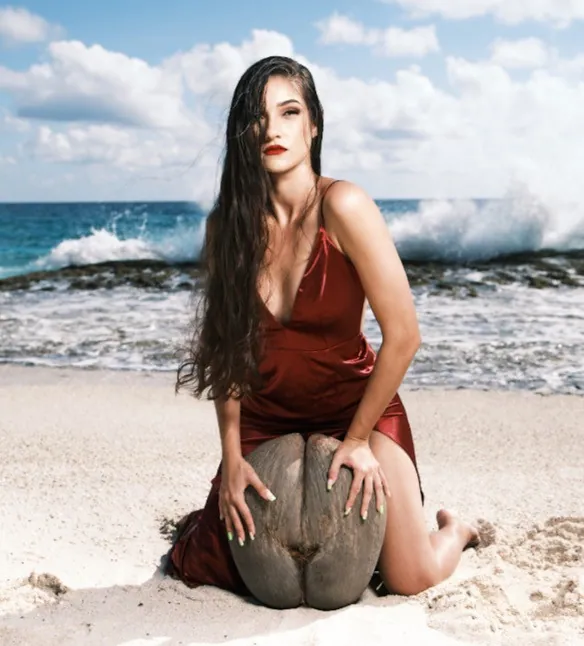
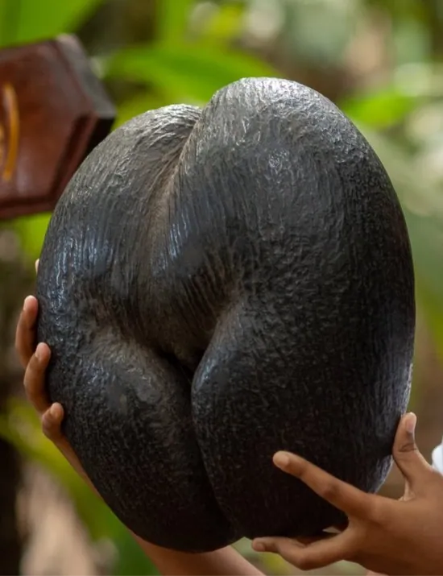
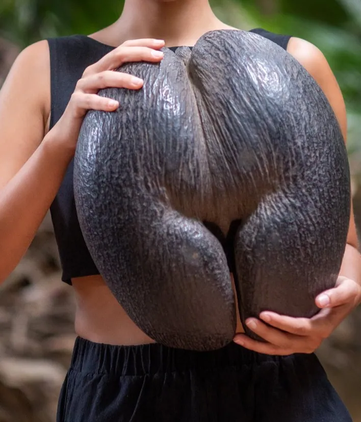
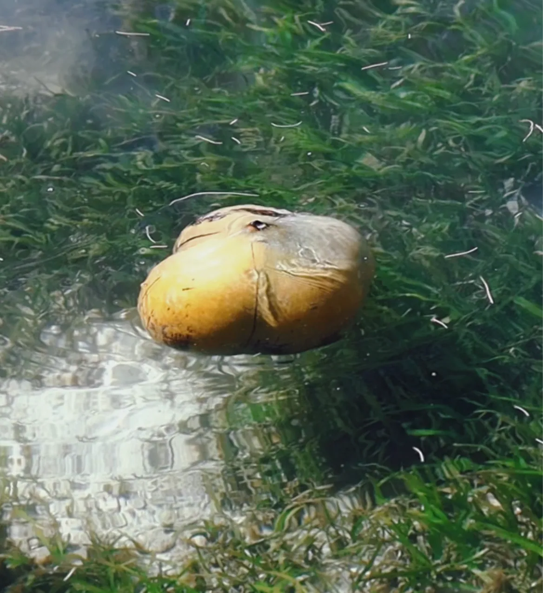

The Puzzling Truth About the Coco de Mer

The Coco de Mer, scientifically known as Lodoicea maldivica, is a palm tree species native to the Seychelles archipelago in the Indian Ocean.

Often referred to as the "love nut", or double coconut".
This remarkable plant has captivated human imagination for centuries due to its unique features and mythical allure.
In this article, we will delve into the scientific fun facts surrounding the Coco de Mer, exploring its intriguing biology, historical significance, and cultural legends.
The Largest Seed in the Plant Kingdom Coco de Mer is renowned for producing the largest seeds in the entire plant kingdom.

These massive seeds can weigh up to 30 kilograms (66 pounds) and measure around 40-50 centimeters (15-20 inches) in diameter.
The seeds' colossal size and peculiar shape, resembling a woman's pelvis and buttocks, have contributed to its association with sensuality and fertility in folklore.
One of the most remarkable aspects of the Coco de Mer is its slow growth and longevity. It takes around six to seven years for the seed to germinate and another 25-30 years before the tree starts producing its own fruit. The Coco de Mer is known for its exceptional lifespan, with some individuals surviving for several hundred years, adding to the air of mystery surrounding the species.
The Coco de Mer thrives in its native habitat on two islands in the Seychelles: Praslin and Curieuse. Its natural distribution is limited to just these islands, making it an extremely rare species.
Due to overexploitation and habitat destruction, the Coco de Mer was listed as vulnerable by the International Union for Conservation of Nature (IUCN) and is now protected under Seychelles law to prevent further depletion.
The Coco de Mer has puzzled scientists and explorers for centuries due to its limited natural distribution. The prevailing hypothesis is that the seeds are dispersed by ocean currents, floating great distances from their native islands. It is believed that the seeds can survive in seawater for extended periods, which facilitates their dispersal to distant shores. However, through various experimentations at the Coco de Mer Collection, we have discovered that it actually sinks (after long periods of time in water) due to it’s permeable husk and heavy weight. The floating coco de mer of legend would only have lifted due to the gases inside the nut released by decomposition of the kernel.

Historically, the Coco de Mer played a crucial role in the lives of Seychellois people, who utilized almost every part of the tree for various purposes.
The nutritious kernel of the Coco de Mer seed, once believed to be a powerful aphrodisiac, was considered a delicacy. The fibrous husk, known as "coir" was used for making ropes and crafts, while the palm fronds were employed for thatching roofs.
The Coco de Mer has been steeped in legends and mythology across various cultures. The ancient Maldivian legends depict the Coco de Mer as the "forbidden fruit" often associated with love and passion. Its suggestive shape has led to numerous tales of romantic escapades and intrigue.
Additionally, the Coco de Mer's discovery on remote beaches by sailors fueled stories of mermaids and mythical sea creatures.
The Coco de Mer, Lodoicea maldivica, stands as a botanical wonder, captivating both scientists and enthusiasts with its size, slow growth, and cultural significance.
This enigmatic palm tree has been an integral part of the Seychellois heritage for centuries and continues to spark curiosity and fascination worldwide.
As efforts to conserve this rare species persist, we can only hope that future generations will also be able to marvel at the beauty and allure of the Coco de Mer, a true testament to the wonders of the natural world.
References
Bibliography:
• Johnson, D. M., & Lutz, J. A. (2018). Giant seeds, wind gaps, and species diversity in a tropical forest. Ecology Letters, 21(3), 325-334.
• Kozlowski, T. T., & Pallardy, S. G. (2002). Acclimation and adaptive responses of woody plants to environmental stresses. The Botanical Review, 68(2), 270-334.
• World Checklist of Selected Plant Families. (2021). Lodoicea maldivica. The
Board of Trustees of the Royal Botanic Gardens, Kew. Retrieved from https://wcsp.science.kew.org/namedetail.do?name_id=171988
• Fleischer-Dogley, F., Matatiken, D., & Laboudallon, V. (2008). Biodiversity and conservation of the Coco de Mer (Lodoicea maldivica) in the Seychelles.
Biodiversity and Conservation, 17(6), 1427-1448.
Filer, D. L. (2011). An ecology of the Lodoicea maldivica (palm) forest on Praslin,
Republic of Seychelles. Biotropica, 43(1), 23-30.